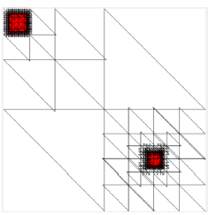
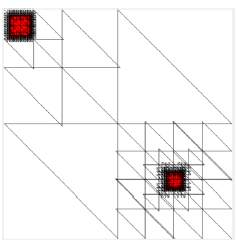

Programs
What am I doing?
Present - Advanced algorithm for Tic Tac Toe
In this moment I'm working on project in Java. I want to create advanced game bord, where user can choose difficulty level,
number of fields, battle with computer or another player. First I will do simple Tic Tac Toe 3x3 and then I want to develop
this aplication.
2018 - My online CV
For this project I used HTML and CSS, also simple function in JavaScript. The page has 3 laps - home, CV, my programs,
where you can see description about my and my programming skills. I didn't use any famework and the page is quite simple
because I'm just start to learn frontend.
2018 - Grain Growth Algorithm
This was project on my studies. I wrote it in C#, in Visual Studio by winforms. The program had to simulate the growth of
grains. The application has many options - user can choose size of array, size of grain, number of grains. Then we can see
the borders of grains, we can add inclusions, or mixed types of algorithms (Monte Carlo and cell automata).
2018 - QuadTree Algorithm
This was another project on my studies for Computational Geometry. Our task was first to make simple structural grid.
Then we made check-point algorithm, which was used in next part of work. Because we had to do grid more dense. To do this
we made QuadTree algorithm which was based on recursion. In this project I used Java and C#.
See the photo 
See the photo 
2017 - "Chat" in sockets
First big project on my studies. I worked in team with other students. We had 4 weeks to get acqauinted with new language
and environment - we worked in Ruby with WebSocket. The aplication consisted of two parts - Client and Server. Client sends
simple program to server, and there the program is run and its correctness is checked.
2015 - Mapping
I took part in big project, which consisted of displaying the animations on the facade of the building. I worked in Blender
and Cinema 4D. Team had about 20 members and everyone made some animations. I learned how to use graphics programs and
connect all parts of work. Link to the result is below:
Mapping in BWA
Mapping in BWA